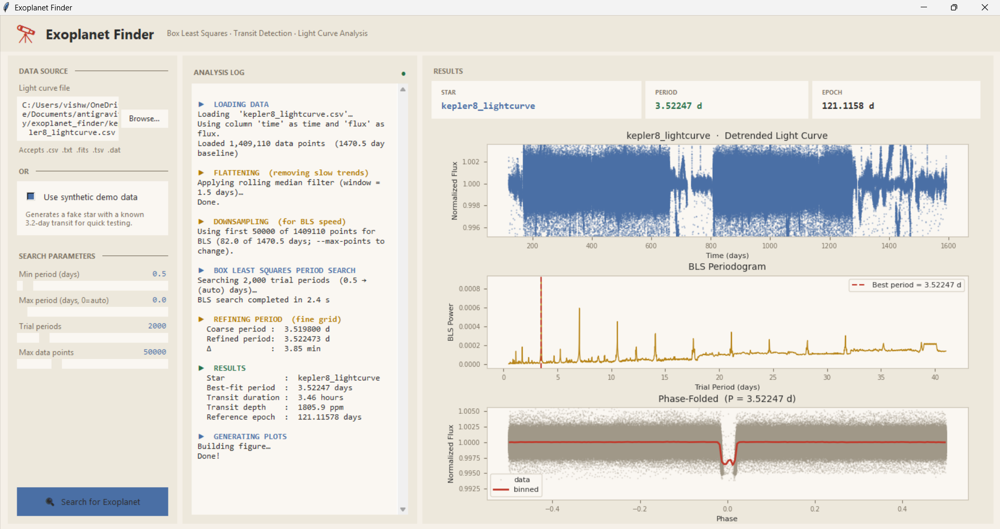
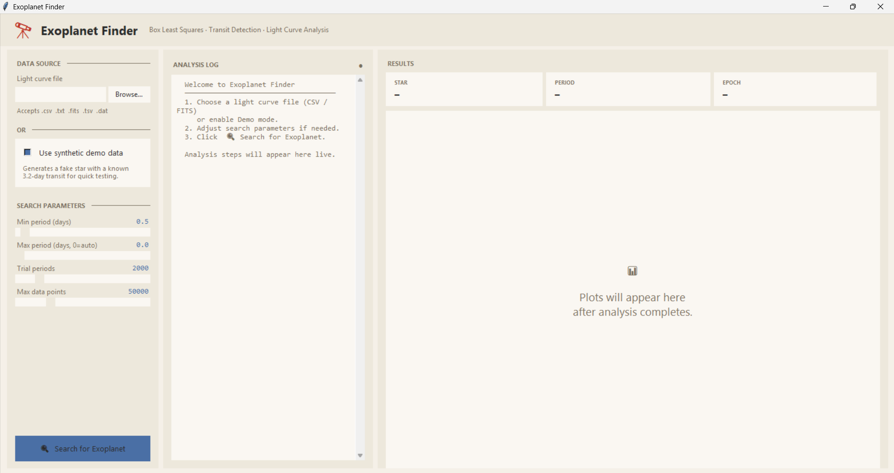

Exoplanet Finder: Box Least Squares Transit Detection
Introduction
Because a host star typically outshines an orbiting exoplanet by a factor of 106 to 109, direct optical imaging is nearly impossible for the vast majority of stellar systems. Instead, astronomers rely on transit photometry: measuring the tiny, periodic drop in starlight as an exoplanet passes directly across the face of its host star.
While modern data science frequently defaults to complex, opaque machine learning models, the foundational workhorses of astronomy are deterministic statistical and signal-processing techniques. Long before deep neural networks, transiting exoplanets were reliably discovered using Box Least Squares (BLS).
I built Exoplanet Finder, a desktop GUI application and algorithmic transit pipeline that extracts exoplanetary orbital periods, transit durations, and depths from raw photometric time series without any machine learning. It handles multi-format datasets from NASA space missions (Kepler, K2, TESS) or local observatories, detrends low-frequency stellar drift, executes BLS period optimization, and produces publication-ready phase-folded diagnostic plots.
Technical Details & Approach
The 4-Stage Detection Pipeline:
- 1. Multi-Format Data Ingestion & Normalization: The pipeline ingests time-series photometry across diverse formats including CSV, TSV, TXT, DAT, and astronomical FITS files. It features automated header detection for time (BJD, JD, UTC) and flux (PDCSAP_FLUX, SAP_FLUX, raw magnitude) columns. It filters non-finite values and outliers, automatically dividing raw counts by the median baseline so flux is normalized to 1.0. It also integrates directly with NASA's MAST archive via Lightkurve to download stitched mission quarters for named targets.
- 2. Non-Parametric Rolling Median Detrending: Stellar light curves exhibit slow baseline drift caused by starspot rotation, spacecraft pointing jitter, and thermal cycles. If left uncorrected, these low-frequency trends swamp shallow transit signals. Rather than fitting high-order polynomials that risk distorting transit geometry, the pipeline applies a rolling median filter (using
scipy.ndimage.median_filter) over a 1.5-day window. Because transits last only a few hours, the median ignores short dips, tracking only the slow background drift. Dividing the raw light curve by this baseline yields a perfectly flattened flux profile. - 3. Box Least Squares (BLS) Period Optimization: BLS models the periodic transit as a top-hat box function defined by period P, duration τ, depth δ, and reference epoch t0. The algorithm scans an exhaustive grid of trial periods (up to 10,000 trial values) and transit durations. For each trial period, the time series is phase-folded, and BLS calculates an analytical power score quantifying how much better a periodic box dip fits the folded data compared to a flat baseline. The true orbital period emerges as a sharp, dominant peak on the periodogram.
- 4. Diagnostic Phase Folding & Multi-Panel Visualization: Once the optimal period is resolved, the pipeline phase-folds the entire multi-month dataset onto a single normalized phase window (-0.5 to +0.5). Folding aligns dozens of individual transit events directly on top of each other, drastically improving signal-to-noise ratio. Overlaid phase-binned averages reveal the characteristic U/V transit morphology, allowing immediate visual confirmation of true exoplanet candidates versus false positives.

GUI Setup: Target file selection, column configuration & period search bounds
Output Diagnostics: Detrended light curve, BLS periodogram peak & phase-folded transit profile
Software Stack & Libraries: Python 3, PyQt6 (Desktop GUI), NumPy, SciPy (Signal processing & rolling median filter), Pandas (Tabular time-series parsing), Astropy (FITS I/O & BoxLeastSquares algorithm), Lightkurve (NASA MAST archive data retrieval), Matplotlib (Astrophysical visualization & plotting).